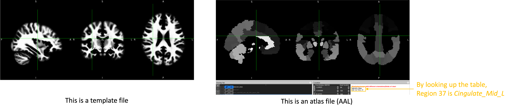

Q: What is the difference between “space”, “template” and “atlas”?
“Space” refers to the background space that one study the brain. Less generally, it refers to the boundaries around the brain. There are two big categories:
Native (individual) space: where your individual brain data is at (and varies from subject to subject)
Common space: enables the comparison between different subjects’ brains. There are two famous common space: the Talairach space and the MNI space.
“Template” is a standard brain in a specific space. For example, the MNI space has the following templates (download here):
MNI305: 305 normal brains were linearly registered to 241 brains that had been registered to the Talairach atlas.
MNI152
MNI152 linear: 152 normal brains linearly registered to the 305 space.
MNI152 nonlinear 6th gen: 152 normal brains non-linearly registered to the 305 space.
MNI152 nonlinear 2009 (three versions: 2009a, 2009b and 2009c)
For atlas (aka., “parcellation”), it refers to how we partition the brain into different regions. It is a map indicating which voxels belongs to which structure. It can be defined on any templates. Application-wise, an atlas, associated with a certain template, usually comes in two types:
Label atlas: a 3D image where each voxel contains the value corresponding to that voxel's classification label.
Probabilistic atlas: a 4D image where each volume contains voxel values 0 to 100 indicating the probability that a given voxel is classified as belonging to the structure represented by that volume.
(Source/Suggested further reading: [1], [2])
|  |
Q: Should I register the atlas (in common space) to the subject's brain, or the opposite?
Q: Which one is better, Surface-based connectivity or Volume-based connectivity?